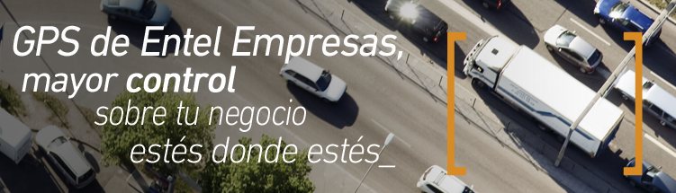

<div class="row" id="loginContent">
    
    <content>
        <h4>
            <span class="corchete">[</span>
            <strong>Con GPS de Entel Empresas, obtendrás mayor productividad y control en el transporte</strong>
        </h4>
        <p>
            <strong>Los desafíos de gestión de flota requieren disponer de información precisa, simple y en línea, lo que se puede lograr incorporando GPS de Entel Empresas.</strong>
        </p>
        <p>
            Con las tecnologías de comunicación y posicionamiento satelital (GPS), podrás aumentar el control de tu flota de vehículos en terreno, conocer su ubicación exacta, revisar las rutas, verificar la distancia recorrida, chequear horarios de entradas o salidas y evidenciar usos indebidos.
        </p>
    </content>
</div>
